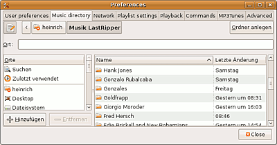
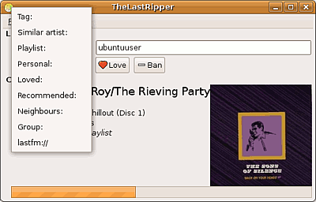
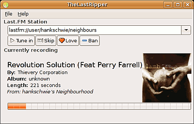
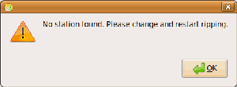

TheLastRipper
Archivierte Anleitung
Dieser Artikel wurde archiviert, da er - oder Teile daraus - nur noch unter einer älteren Ubuntu-Version nutzbar ist. Diese Anleitung wird vom Wiki-Team weder auf Richtigkeit überprüft noch anderweitig gepflegt. Zusätzlich wurde der Artikel für weitere Änderungen gesperrt.
Anmerkung: Seit Anfang Dez. 2012 erhält ThelastRipper keinen Zugriff mehr auf die Sender, da es nicht Last-FM-API-konform ist
Zum Verständnis dieses Artikels sind folgende Seiten hilfreich:
Achtung!
Last.fm beschränkt den Zugriff dienstfremder Musikplayer auf seinen Dienst immer mehr. Gegebenenfalls ist die hier vorgestellte Software in ihrer Funktionalität eingeschränkt!
TheLastRipper  ist eine Aufnahme-Software für LastFM-Streams. Gleichzeitig mitgehört werden kann parallel in dazu geeigneten Playern über
ist eine Aufnahme-Software für LastFM-Streams. Gleichzeitig mitgehört werden kann parallel in dazu geeigneten Playern über http://127.0.0.1:8000 (bzw den verwendeten Port). Voraussetzung zur Nutzung ist ein Benutzerkonto bei Lastfm  .
.
Der Stream wird automatisch in mp3-Dateien, meist in 128kbit/s-CBR-Qualität, gespeichert, die nach dem Muster Künstler/Album/XX - Titel.mp3 (kann modifiziert werden) im vorgegebenen Zielverzeichnis abgelegt und mit einem ID3v2-Tag versehen werden. Gleichzeitig werden, wenn in der Lastfm-Datenbank vorhanden, die jeweiligen Cover als .jpeg-Dateien mit im Album-Ordner gespeichert. Ebenso können automatisch Playlists in verschiedenen Formaten aus den vorhandenen Daten erstellt werden. Die Software steht unter GPLv2-Lizenz . TheLastRipper kann gut nebenher betrieben werden und läuft auch in mehreren Instanzen gleichzeitig. Eine stabile Verbindung mit Internet-Flatrate ist für den "Power-User" von Vorteil.
Installation¶
Für Ubuntu 10.04 ist TheLastRipper mit Version 1.4.0 in den Paketquellen vorhanden[1]:
thelastripper
 mit apturl
mit apturl
Paketliste zum Kopieren:
sudo apt-get install thelastripper
sudo aptitude install thelastripper
Zeitweise (seit Mitte Mai 2010) konnte der Player nicht mehr auf die Last.fm-Seite zugreifen (siehe Bug-Report auf code.google.com), es handelte sich allerdings wohl eher um ein Problem in Mono. Die Verarbeitung der Links, in denen ein doppelter Slash // vorkommt, führte zu einem Fehler. Eine provisorische Lösung besteht darin, Mono aus dem Quellcode zu beziehen, wie im verlinkten Thread zu patchen und selbst zu kompilieren. Ggf. muss zusätzlich auch gtk-sharp-2.10.12 und taglib-sharp_2.0.3.7+dfsg-1 selbst kompiliert werden (siehe auch im Forum.)
Ab Oneiric Ocelot 11.10¶
In Ubuntu 11.10 ist das Paket aus den Ubuntu-Quellen entfernt worden, wohl weil es nicht an die Umstellung von mono runtime 2.0 auf 4.0 angepasst wurde (siehe diesen Blogbeitrag auf orangesquash.org.uk). Beim Start im Terminal erscheint nur zunächst eine Fehlermeldung, allerdings kann man TheLastRipper mit dem Befehl
mono --runtime=v4.0 /usr/local/lib/thelastripper/TheLastRipper.exe
starten, und es so "zwingen", mono runtime 4.0 zu verwenden, ggf. muss je nach Installationsort das local auch weggelassen werden. Alternativ kann auch der Startbefehl in der Datei /usr/(local)/bin/thelastripper in einem Editor mit Rootrechten entsprechend angepasst werden oder bei Selbstkompilierung in der Datei /MonoClient/thelastripper.in die Zeile
exec mono "@expanded_libdir@/@PACKAGE@/TheLastRipper.exe" "$@"
durch
# This probably do something besides just say use the 4.0 runtime. exec mono --runtime=v4.0 "@expanded_libdir@/@PACKAGE@/TheLastRipper.exe" "$@"
ersetzt werden (siehe diesen Patch auf google.code.com).
Installation aus einem Fremdpaket¶
Hinweis:
Unter Ubuntu 12.10 kann das Paket nicht eingesetzt werden, dort muss das Paket momentan selbst erstellt werden (s.u.).
Folgende Pakete müssen installiert[1] werden:
mono-runtime
librsvg2-2.18-cil
libtaglib2.0-cil
mit apturl
Paketliste zum Kopieren:
sudo apt-get install mono-runtime librsvg2-2.18-cil libtaglib2.0-cil
sudo aptitude install mono-runtime librsvg2-2.18-cil libtaglib2.0-cil
Man kann das für die Installation von TheLastRipper benötigte .deb-Paket der neusten Version thelastripper_1.4.1-1_all.deb  herunterladen und dieses installieren[2]. Es handelt sich dabei um eine von der Rechnerarchitektur unabhängige CIL-Version .
herunterladen und dieses installieren[2]. Es handelt sich dabei um eine von der Rechnerarchitektur unabhängige CIL-Version .
Hinweis!
Fremdpakete können das System gefährden.
Manuelle Installation¶
Man lädt sich den Quellcode der aktuellen Version 1.4.1 von der Projektseite herunter und entpackt das .tar.gz-Archiv[3]. Die Software wird mit der üblichen Methode kompiliert[4]. Zum Erstellen der neusten Version müssen ggf. noch die Pakete
mono-gmcs
mono-devel
libglib2.0-cil-dev
libgtk2.0-cil-dev
libtaglib-cil-dev
mit apturl
Paketliste zum Kopieren:
sudo apt-get install mono-gmcs mono-devel libglib2.0-cil-dev libgtk2.0-cil-dev libtaglib-cil-dev
sudo aptitude install mono-gmcs mono-devel libglib2.0-cil-dev libgtk2.0-cil-dev libtaglib-cil-dev
installiert werden.
Manchmal erkennt ./configure die rsvg-sharp-Bibliothek nicht korrekt und bricht mit diesem Fehler ab:
No package 'rsvg-sharp-2.0' found Consider adjusting the PKG_CONFIG_PATH environment variable if you installed software in a non-standard prefix. Alternatively, you may set the environment variables RSVG_SHARP_20_CFLAGS and RSVG_SHARP_20_LIBS to avoid the need to call pkg-config. See the pkg-config man page for more details.
Abhilfe schafft das manuelle Setzen der beiden zuletzt genannten Umgebungsvariablen[5].
export RSVG_SHARP_20_LIBS="-r:/usr/lib/mono/rsvg2-sharp-2.0/rsvg2-sharp.dll" export RSVG_SHARP_20_CFLAGS="-I:/usr/share/rsvg2-sharp/2.0/rsvg2-api.xml"
Danach erneut ./configure aufrufen, bei Erfolg weiter wie bekannt make, etc.).
Ein so erstelltes Paket lässt sich ggf. nicht mit dem Software-Center installieren, mit gdebi oder dpkg funktioniert es aber.
Nach erfolgreicher Installation findet sich das Programm beispielsweise im GNOME-Menü unter:
"Anwendungen -> Unterhaltungsmedien -> TheLastRipper"
Im Xfce-Menü erreicht man es unter
"Applications - > Multimedia -> TheLastRipper".

Konfiguration¶
Nach dem Starten des Programm erscheint ein Einstellungsfenster, "Preferences", in dem im Reiter "User preferences" ein gültiger Lastfm-Benutzername sowie das dazugehörige Passwort eingegeben werden müssen. Das Passwort kann auch für spätere Verwendung gespeichert werden; allerdings merkt sich TheLastRipper nur einen Benutzer bzw. dessen Passwort; wenn sich ein anderer Benutzer einloggt, wird damit auch das Passwort des ersten gelöscht.
Im Reiter "Network" kann, wenn gewünscht, ein Proxy angegeben werden.
Im Reiter "Music directory"" wird das (beschreibbare![7]) Verzeichnis eingegeben oder erstellt, in dem TheLastRipper dann die Dateien und Cover ablegt. Bestimmten "problematische" Zeichen (z.B. ":", "]"), die auf FAT- bzw NFTS-formatierten Datenträgern nicht abgespeichert werden können, werden durch "_" ersetzt; so können alle Datenträger unabhängig von der Formatierung verwendet werden. Beim Abspeichern der Dateien wird nicht überprüft, ob der Träger auch noch genügend Kapazität hat; hier sollte man großzügig sein, denn die Erfahrung lehrt, dass auf diesem Wege schnell recht große Sammlungen zustande kommen. Auch wer z.B. seinen MP3-Player oder USB-Stick "volllaufen" lassen will, sollte diese Hinweise beachten.
Im Reiter "Playlist Settings" kann festgelegt werden, ob und nach welchen Kriterien/Formaten Playlists von den gerippten Titeln erstellt werden sollen.
"Playback" bietet die Möglichkeit, festzulegen, über welchen Port die Aufnahme simultan wiedergegeben werden kann; Standard ist http://127.0.0.1:8000. Der letzte Wert lässt sich aber verändern. Wer TheLastRipper in mehreren Instanzen verwenden will, muss hier für jede Instanz unterschiedliche Ports angeben, außerdem kann pro Lastfm-Konto nur eine Instanz verwendet werden!
Bei "Commands" kann festgelegt werden, ob bestimmte Befehle vor oder nach der Aufnahme für die zu speichernden Tracks ausgeführt werden sollen; außerdem kann hier festgelegt werden, ob für die Tracks eine Normalisierung mit MP3Gain durchgeführt werden soll. Zur Nutzung muss natürlich mp3gain installiert sein; außerdem wird ein Player benötigt, der damit umgehen kann (z.B. Amarok mit entsprechendem Plugin).
"MP3Tunes" bietet die Möglichkeit, die gerippten Titel gleich bei mp3tunes hochzuladen, um sie von überall her greifbar zu haben. Dazu muss natürlich ein entsprechendes Konto eingerichtet sein.
Im Reiter "Advanced" lässt sich zum einen festlegen, ob, und was für, ein Kommentar in die ID3-Tags geschrieben werden soll (verwendbare Variablen sind der Sendername, Künstler, Album oder Genre). Außerdem kann hier das Titelformat sowie der Speicherort eingestellt werden (Standard ist es, die Tracks nach dem Muster /Pfad/zum/Musikverzeichnis/Künstler/Album/Titelnummer - Titel.mp3 abzulegen, aber das kann frei gewählt werden.
Nach dem "Login" muss das Fenster geschlossen werden, und man gelangt dann auf das eigentliche Playerfenster.

Benutzung¶
Hier sind im Dropdown-Menü etliche Möglichkeiten vorgesehen, um Sender auszuwählen ("Tag, Similar Artist, Playlist, Personal, Loved, Recommended, Neighbour, Group"). Es lassen sich bei "lastfm://" nach dem Muster "lastfm://user/BENUTZERNAME/recommended" alle anderen Sender einstellen. Zu erwähnen ist noch die Möglichkeit, mit "lastfm://artist/KÜNSTLERNAME/fans" die bevorzugte Musik der "Top-Listener" eines Künstlers einzustellen.
Mit dem "Tune in"-Knopf wird der eingestellte Sender gestartet; im Fenster erscheinen Informationen zum Titel, Album, Künstler, Tracklänge und Herkunfts-Sender sowie ein Cover. Der Statusbar unten informiert über den Fortschritt des Rips, der in "Echtzeit" erfolgt. Die Knöpfe " "Love" und " Ban" funktionieren z.Z. nicht zuverlässig, ein Bug, der mit den Veränderungen an der Last.FM-API zusammenhängt. Es lässt sich mit " Skip" zum nächsten Titel springen, " Love" sollte den momentanen Titel zur "Lieblingsliste" des Benutzers hinzufügen; und " Ban" sollte dazu führen, dass der verbannte Titel für den eingeloggten Benutzer nie wieder gespielt wird. Ein Pause-Button ist - wie auch bei dem LastFM Player - aus lizenzrechtlichen Gründen nicht möglich. Die Titel werden momentan nicht "gescrobblet", tauchen also nicht auf der Profil-Seite des Benutzers bei Last.fm und in deren Statistiken auf - das lässt sich derzeit nicht einstellen.

Tipps und Tricks¶
Sender auswählen¶
Für Last.fm können keine Titel direkt ausgewählt und abgespielt werden!
Hinweis:
Seit dem 17.11. 2010 ist auch die Wiedergabe von Playlists und einigen anderen Stationen auch für Abonnenten generell nicht mehr möglich (siehe dazu diese "Erläuterung" auf last.fm)
Es besteht allerdings die Möglichkeit, Songs mit eigenen "tags" zu versehen; zumindest Abonnenten können daraus auch einen Sender erstellen.
"Unspielbare" Titel aufspüren¶
Es gibt in den Datenbeständen Tracks, die zwar einem Künstler, aber keinem Album zugeordnet sind; oder es existieren vom selben Titel "verschiedene" Versionen, die sich nur minimal in der Schreibweise der Titels, Künstlers oder Albums unterscheiden. Z.T. ist auch die Zuordnung zu Künstlern nicht ganz "sauber", sprich: der selbe Titel wird verschiedenen Künstlern/Gruppen zugeordnet. Falls also ein bestimmter Titel anscheinend nicht vorhanden ist, besteht die reele Chance, ihn unter anderem Namen doch noch aufzuspüren und abspielen zu können. Der Track findet sich dann als "xx - Titel" (xx ist die Titelnr., wenn, und wie, sie bei Lastfm für den Titel gespeichert ist - das ist nicht immer zuverlässig) in dem festgelegten Verzeichnis. Die Ordnerhierarchie sieht z.B. so aus: Künstlername/unknown/ (siehe Screenshot; ein Cover kann natürlich für das Album "unknown" nicht gefunden werden; es wird weiterhin das Cover des zuvor gerippten Tracks/Albums angezeigt).
id3-Tags¶
Die Qualität der erstellten ID3v2-Tags ist unterschiedlich. Standard sind inzwischen die Angaben zu Künstler, Album und Titel (mit Titelnummer im Album, falls vorhanden - wenn kein Album angegeben wird, fehlt natürlich auch die Nummer); meist sind die Dateien bei Last.fm auch mit dem "Genre" versehen (manchmal etwas zweifelhaft); TheLastRipper kann im Kommentarfeld einen Hinweis nach dem Muster recorded from SENDERNAME hinzufügen, das ist in den Einstellungen (s.o.) frei wählbar. Programme wie EasyTAG oder Audio Tag Tool helfen dabei, die Übersicht zu behalten. Bei fehlenden Infos zu den Tags könnten Seiten wie Discogs oder MusicBrainz helfen.
Mithören¶
Der Lastfm-Stream wird "unhörbar" mitgeschnitten und archiviert; allerdings lässt sich über einen "Umweg" auch fast zeitgleich mithören. Dazu kann in einem geeigneten Player (z.B. Rhythmbox, VLC, Amarok) der Stream direkt über die Adresse "http://127.0.0.1:8000" (oder Port wie gewünscht festlegen) wiedergegeben werden. So hat man die Möglichkeit, einen nicht gewünschten Titel über den " Skip"-Button des TheLastRipper-Fensters zu überspringen; er wird dann nicht gespeichert. Allerdings ist die Ausführung im "Wiedergabe"-Player um etwa 20 Sekunden versetzt. Man sollte daher mit dem Aufruf nach dem Start von TheLastRipper etwas warten, weil sonst ggf. sowohl TheLastRipper als auch der "Host-Player" einfrieren können (siehe auch im Forum).
Cover¶
Um das Herunterladen der Cover (die standardmäßig im Albumverzeichnis gespeichert werden) zu unterbinden, kann der Quellcode angepasst werden. Dazu wird im Texteditor die Datei LastManager.stream.cs im Download-Verzeichnis thelastripper-1.4.1/libLastRip/LastManager/ bearbeitet; dort sind die Zeilen 693-710 für das Finden und Speichern der Cover zuständig. Durch Auskommentieren dieser Zeilen (/* vor Zeile 693 und */ nach Zeile 710 setzen) hindert man TheLastRipper daran, die cover.jpg-Dateien abzulegen. Danach das Paket neu kompilieren und installieren.
Probleme¶
Accounts¶
Komplikationen können auftreten, wenn gleichzeitig verschiedene Anwendungen auf ein Last.fm-Benutzerkonto zugreifen. Wenn man z.B. seine Tags auf der Lastfm-Seite bearbeitet und sich dann ausloggt, beeinflusst man damit auch einen laufende Instanz von TheLastRipper, die, da der Benutzer ausgeloggt ist, keinen Zuriff mehr bekommt. Das Programm muss dann nach Speicherung des momentan gerippten Titels neu gestartet werden. Wenn gleichzeitig mit dem Ripper z.B. der Flash-Player auf der Web-Seite selbst oder der LastFM Player laufen, und dort dann der Sender geändert wird, kann das auch unvorhergesehene Auswirkungen auf die Software haben. Abhilfe kann hier ein "Zweit-Konto" schaffen: verschiedene Benutzer können gleichzeitig von verschiedenen Anwendungen aus auf den selben Sender zugreifen, sodass dann z.B. die eine Anwendung spielt, während die andere rippt.
Speicherverwendung¶
Da TheLastRipper die Dateien vor dem Ablegen im Zielverzeichnis im Arbeitsspeicher "sammelt", kann es - besonders bei Nutzung mehrerer Instanzen gleichzeitig - zu Problemen kommen, wenn andere speicherhungrige Programme laufen (z.B. Bildbearbeitungsprogramme). Da hilft es dann ggf. nur, TheLastRipper herunterzufahren, um z.B. das gerade geänderte Bild zu sichern.
Rhythmbox¶
Wenn TheLastRipper gleichzeitig mit Rhythmbox auf das selbe Verzeichnis zugreift, kann es zu Problemen kommen; bereits vorhandene und dann von TheLastRipper nochmals gerippte Dateien verschwinden zunächst aus der Rhythmbox-Liste; ggf. stürzt Rhythmbox auch ab, wenn es den in dem Moment abgespielten Titel betrifft. Ein Neustart von Rhythmbox schafft Abhilfe; die als verschwunden gemeldeten Titel tauchen auch wieder auf. Das Problem existiert allerdings nur, wenn im Reiter "Preferences -> Advanced" die Checkbox "Overwrite existing music" aktiviert ist.

Probleme bei Last.fm¶
Der Datenbestand von Last.fm ist riesig, birgt aber auch manchen Fehler in sich: einige Tracks werden zwar als "streambar" geführt, sind aber in der Realität nicht auffindbar, beschädigt, verloren gegangen oder vom Künstler/Label zurückgezogen worden. Falls also TheLastRipper nicht startet und schon am Anfang die Fehlermeldung "No Station found. Please change and restart ripping." ausgibt, hilft erneutes Starten meist wenig. Dann ist nämlich entweder der angegebene Sender nicht abspielbar, ggf. kann sie auch aufgrund von Lizenzbestimmungen zu der Anzahl von Liedern eines Künstlers, die innerhalb eines bestimmten Zeitraums wiedergegeben werden dürfen, nicht mehr gestartet werden - da hilft nur Geduld. Oder aber es liegt ein Serverproblem bei Last.fm vor - das kommt hin und wieder vor und betrifft dann auch andere "Third-Party-Anwendungen"; meist gibt es sich nach einiger Zeit 'von selbst' wieder.
Leider ist die Übertragung nicht immer stabil, so dass es auch im Normalbetrieb zu Abbrüchen kommen kann; da hilft dann tatsächlich der "Tune in"-Knopf. Insofern ist TheLastRipper nur eingeschränkt "unbeaufsichtigt" verwendbar; auch bei Abbrüchen aufgrund von Unterbrechungen der Internetverbindung muss neu eingetunt werden.
- Erstellt mit Inyoka
-
 2004 – 2017 ubuntuusers.de • Einige Rechte vorbehalten
2004 – 2017 ubuntuusers.de • Einige Rechte vorbehalten
Lizenz • Kontakt • Datenschutz • Impressum • Serverstatus -
Serverhousing gespendet von